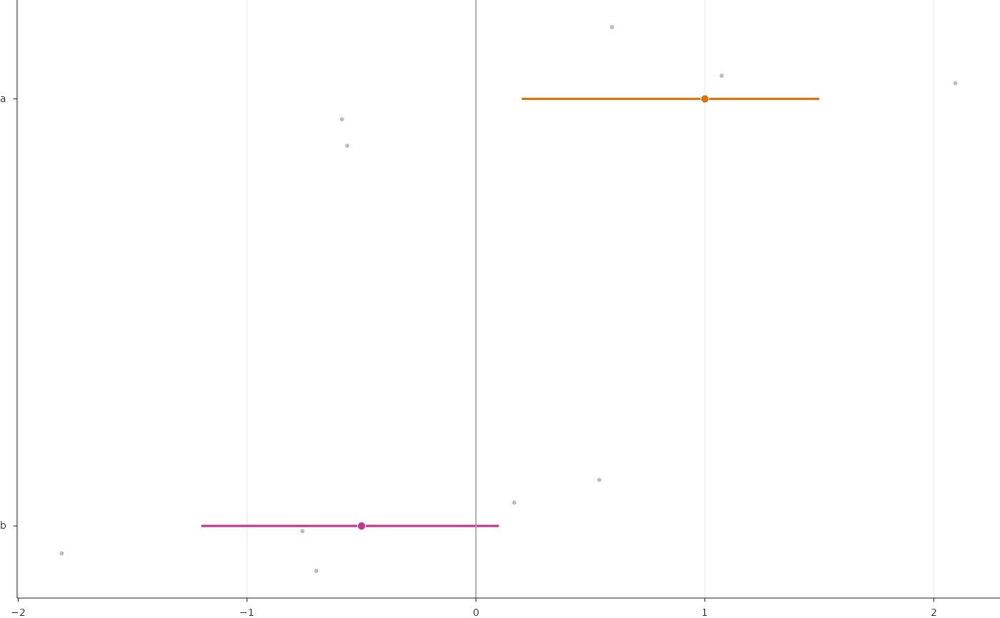

One row per analysis or cell type: an interval (for example a bootstrap confidence interval of the median), a marked estimate, optional jittered unit (patient) values behind it, a reference line and a statistic text to the right of the panel written from the data. Units flagged in the unit table (for example patients with low support) can be drawn as open symbols in their group colour with a short label.
Usage
PlotIntervalForest(
data,
points = NULL,
row = "row",
estimate = "estimate",
lower = "lower",
upper = "upper",
value = "value",
row_order = NULL,
row_labels = NULL,
colours = "ink",
interval_colours = NULL,
estimate_size = 18,
estimate_edge = 0.4,
interval_linewidth = 1.2,
point_colour = "#BDBDBD",
point_size = 5,
jitter = 0.18,
seed = 1,
flag = NULL,
flag_group = NULL,
group_colours = NULL,
flag_size = 15,
flag_edge = 0.8,
flag_label = NULL,
flag_label_size = 4.8,
flag_label_vjust = 0.5,
flag_spread = 0.17,
label = NULL,
label_size = 4.8,
label_colour = "muted",
label_x = 1.03,
reference_x = 0,
reference_linewidth = 0.6,
x_limits = NULL,
y_limits = NULL,
x_breaks = NULL,
x_nbins = 6,
x_label = NULL,
y_label = NULL,
tick_size_x = NULL,
tick_size_y = NULL,
title_size = NULL,
grid = c("x", "none"),
box_mm = NULL,
style = ManuscriptStyle()
)Arguments
- data
Summary table, one row per row of the forest.
- points
Optional unit table with
rowandvaluecolumns.- row, estimate, lower, upper
Columns of
data.- value
Value column of
points.- row_order
Rows from top to bottom (default: order in
data).- row_labels
Named tick labels per row.
- colours
Estimate colours: one colour or named per row.
- interval_colours
Interval colours (default: the estimate colours).
- estimate_size
Estimate marker area (pt^2), drawn with a white edge of
estimate_edgepoints.- estimate_edge
Edge width.
- interval_linewidth
Interval width in points.
- point_colour, point_size
Unit points (area in pt^2).
- jitter
Half-width of the vertical jitter of unit points (rows are one unit apart).
- seed
Seed of the jitter (presentation only).
- flag
Optional logical column of
pointsmarking units drawn as open symbols in their group colour instead of grey points; these are spread overflag_spreadaround the row in their order of appearance.- flag_group
Group column of
pointsfor flagged units.- group_colours
Named group colours.
- flag_size, flag_edge
Open symbol area and edge width.
- flag_label
Optional column of
pointswritten left of flagged symbols.- flag_label_size, flag_label_vjust
Its size and vertical justification.
- flag_spread
Half-range of the vertical spread of flagged symbols.
- label
Optional template (see
FormatTemplate()) written for each row atlabel_x(panel fraction) to the right.- label_size, label_colour, label_x
Label style and position.
- reference_x
Position of the vertical reference line (
NULLfor none).- reference_linewidth
Its width in points.
- x_limits, y_limits
Limits; rows sit at 1 (bottom) to n (top). Automatic limits add 5% of the data range.
- x_breaks, x_nbins
x ticks.
- x_label, y_label
Axis titles.
- tick_size_x, tick_size_y
Tick label sizes.
- title_size
Axis title size.
- grid
"x"(default) or"none".- box_mm
Size of the data area
c(width, height)in millimetres, passed byRenderFigure(); used by"auto"tick intervals (seeNiceBreaks()).- style
A
ManuscriptStyle()object.
Examples
s <- data.frame(row = c("a", "b"), estimate = c(1, -0.5), lower = c(0.2, -1.2),
upper = c(1.5, 0.1), k = c(9, 7), n = 9, p = c(0.004, 0.1))
pts <- data.frame(row = rep(c("a", "b"), each = 5), value = c(rnorm(5, 1), rnorm(5, -0.5)))
PlotIntervalForest(s, pts, colours = c(a = "#D9730D", b = "#C2378E"),
label = "{k|d}/{n|d} patients; p = {p|p}")
